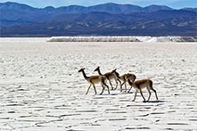

Salinas Grandes
Las Salinas Grandes en la provincia de Jujuy es el tercer salar más grande de Sudamérica.
Puna argentina. Una inmensa planicie blanca que
llega al horizonte.
Las Salinas Grandes con sus asombrosos paisajes se convirtió es uno de los destinos imperdibles de la provincia. Para llegar a las Salinas Grandes se debe atravesar la impresionante Cuesta de Lipán con sus hermosos paisajes.
Como llegar a las Salinas Grandes
Las Salinas Grandes se encuentran sobre la Ruta Nacional 52, la misma que llega hasta el Paso de Jama (Paso Internacional Argentina-Chile). El viaje comienza desde la localidad de Purmamarca y antes de llegar a las salinas se debe atravesar la Cuesta de Lipán, con una altura máxima de 4.170 metros. La ruta es asfaltada y se encuentra en muy buen estado.
No hay transporte público a las Salinas Grandes, pero diferentes agencias de viaje organizan excursiones.
Distancias desde Salinas Grandes: Purmamarca 66 km, Tilcara 91 km, Humahuaca 134 km, San Salvador de Jujuy 131 km, Salta 248 km.